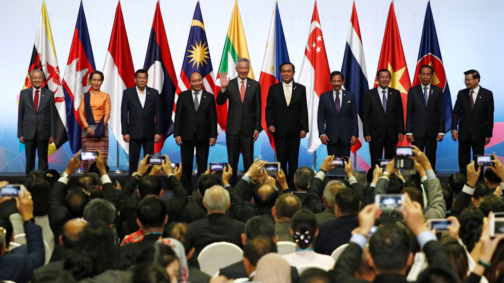

Southeast Asia is comprised of eleven countries, including tropical Singapore, where I am from!

The Association of Southeast Asian Nations, or ASEAN, is a regional bloc of 10 member states in Southeast Asia, which promotes intergovernmental cooperation and facilitates economic, political and sociocultural integration between its members and other countries in Asia.